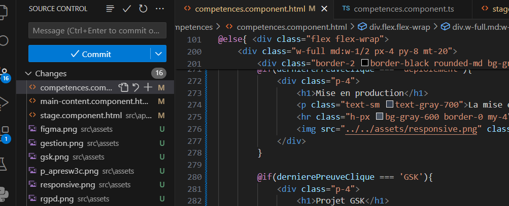
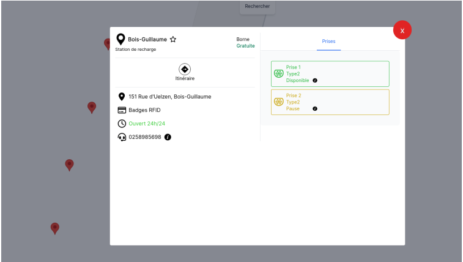

B 1.1 - Gérer le patrimoine informatique
B 1.2 - Répondre aux incidents et aux demandes d'assistance et d'évolution
B 1.3 - Développer la présence en ligne de l'organisation
B 1.4 - Travailler en mode projet
B 1.5 - Mettre à disposition des utilisateurs un service informatique
B 1.6 - Organiser son développement professionnel
World Wide Web Consortium
Vérifier le respect des règles d’utilisation des ressources numériques
Durant ma première année de BTS SIO, j'ai découvert ce qu'était le W3C. Par la suite, j'ai pris l'habitude de vérifier mes pages grâce à un site web qui suivait ces règles.

Formation RGPD
Mettre en place et vérifier les niveaux d’habilitation associés à un service
Durant ma formation, j'ai suivi une formation visant à me former à la cybersécurité, plus précisément à la gestion des données.


Mission de traduction
Vérifier le respect des règles d’utilisation des ressources numériques
Durant mon stage de première année à Flazio, j'ai dû vérifier que la totalité du site était bien traduite en français. Flazio n'étant pas une entreprise française, une légère correction s'imposait. J'ai dû répertorier les erreurs dans un fichier avec plusieurs informations pour les faire parvenir à mon tuteur.

Gestion de Projet
Analyser les objectifs et les modalités d’organisation d’un projet
Planifier les activités
Durant mon stage de deuxième année au sein de SGA Mobility, j'ai pu découvrir pleinement ce qu'était la gestion de projet plus en profondeur. En effet, via des outils comme Trello et Figma, la gestion ainsi que l'assignation de tâches précises permettent de faciliter le travail et donc d'améliorer le rendement final pour chaque membre d'équipe.


Création d'un site web via le CMS Flazio
Participer à l’évolution d’un site Web exploitant les données de l’organisation.
Durant mon stage de première année, j'ai eu à utiliser un nouveau CMS pour découvrir plus en détails l'entreprise qui m'accueillait, et ma première mission fut de créer un site web.
Lien du site web
Mise en production
Déployer un service
La mise en production du site web sur lequel je travaillais a entraîné de longues phases de test ainsi que la correction d'un grand nombre de bugs. Pour ce faire, j'ai dû tester les fonctionnalités responsives du site via l'application AppResponsive.
Projet GSK
Évaluer les indicateurs de suivi d’un projet et analyser les écarts
Durant ma première année, j'ai dû travailler sur un projet nommé GSK qui avait pour but de planifier des tâches et de répartir le travail entre plusieurs étudiants.
Création d'un site web de gestion financière
Analyser les objectifs et les modalités d’organisation d’un projet
Durant mon stage de première année de BTS SIO, j'ai dû créer un site web retraçant les opérations d'une entreprise, permettant d'avoir une vue plus claire sur les dépenses et les recettes de l'entreprise.
Collaboration au sein d'un projet informatique
Vérifier le respect des règles d’utilisation des ressources numériques
Durant mon stage au sein de SGA, j'ai dû travailler en équipe, ce qui incombe de devoir avoir des outils de gestion de version, comme par exemple Git. Durant mon stage, j'ai utilisé principalement Git et Bitbucket.

Gérer son identité professionnelle
Tout au long de ma formation et de mes expériences, j'ai compris qu'avoir un profil professionnel sérieux et rigoureux était impératif. C'est pourquoi je tiens à jour très régulièrement mon profil LinkedIn pour me tenir au courant de certaines opportunités et actualités.
Ma veille technologique
Mettre en œuvre des outils et stratégies de veille informationnelle
Depuis juin 2023, je tiens de manière mensuelle à jour ma veille technologique qui porte sur le pentest. C'est une façon de se tenir informé et de faire parvenir l'information à soi, très importante.

Mes preuves
Ici, vous retrouverez toutes les preuves nécessaires liées à mes compétences, constituées : d'explications, de détails, d'images et de fichiers PDF.
Projet TimeTrack
Analyser les objectifs et les modalités d’organisation d’un projet
Planifier les activités
Durant mon projet TimeTrack, mon équipe et moi avons dû nous répartir le travail et organiser notre temps pour assurer une avancée constante tout au long du projet.
Projet GestionStage
Analyser les objectifs et les modalités d’organisation d’un projet
Planifier les activités
Durant mon projet GestionStage, mon équipe et moi avons dû nous répartir le travail et organiser notre temps pour assurer une avancée constante tout au long du projet.
Projet TimeTrack
Réaliser les tests d’intégration et d’acceptation d’un service
Déployer un service
Durant le projet TimeTrack, mon équipe et moi avons mis à disposition un service pour de potentiels utilisateurs. Nous l'avons donc sécurisé pour éviter d'éventuelles usurpations ou vols d'informations.

Stage chez SGA
Traiter des demandes concernant les services réseau et système, applicatifs
Lors de mon stage chez SGA Mobility, j'ai participé au développement et à la mise à jour du site web de l'entreprise. J'étais chargé de traiter les tickets attribués par la supervision pour apporter des modifications et des améliorations spécifiques au site, garantissant ainsi son bon fonctionnement et sa mise à jour continue.
